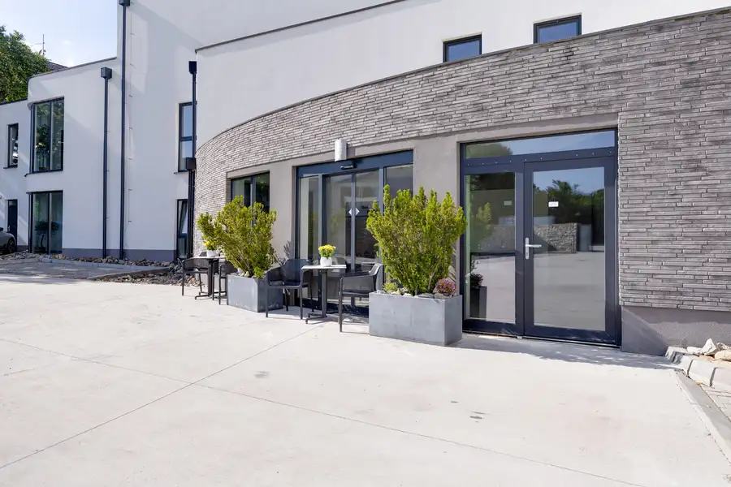
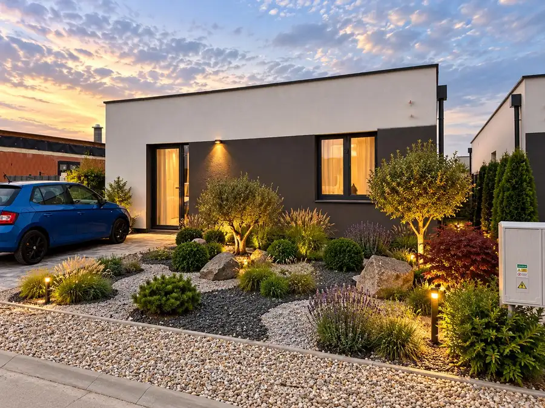
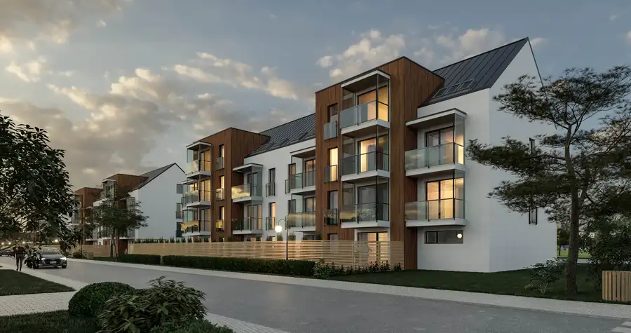

AZ. ZNÍŽENÁ CENA - Bývanie v objatí prírody - Útulný 3-izb.RD pri rybníku (Trnava – Kamenný mlyn)
Trnava
- Plocha91 m²
- StavPôvodný stav
- VlastníctvoOsobné
O nehnuteľnosti
Hľadáte únik z mestského ruchu, no chcete ostať na skok od centra Trnavy? Ponúkame na predaj 10-ročnú novostavbu „záhradného domu“, ktorá spája komfort moderného bývania s neopakovateľnou atmosférou lokality Kamenný mlyn.Dispozícia:✨ Hlavné prednosti nehnuteľnosti: * Lokalita: Vyhľadávaná časť Kamenný mlyn (smer splav), za domom tečie potok a v tesnej blízkosti sa nachádza rybník – ideálne na relax. * Prístup a súkromie: K domu vedie nová asfaltová cesta. Pozemok je kompletne oplotený s vjazdom cez automatickú posuvnú bránu. * Parkovanie: Priamo na pozemku sú vybudované 2 parkovacie miesta.🏗️ Technické parametre: * Konštrukcia: Kvalitný Ytong, zateplenie. * Strecha: Kombinácia keramickej škridle a asfaltového šindľa. * Kúrenie: Komfortné elektrické podlahové kúrenie v celom dome. * Siete: Elektrina (220/380V), vlastná studňa s pitnou vodou, odpad riešený vlastnou ČOV. * Bezpečnosť: Dom je chránený alarmom a kamerovým systémom. * Bonusy: WiFi pripojenie, Skylink TV, klimatizácia (príprava).📐 Dispozícia a výmera (cca 80 m² úžitkovej plochy):Dom je čiastočne poschodový a veľmi prakticky riešený:1. Nadzemné podlažie (61,81 m²): * Svetlá obývacia izba prepojená s kuchyňou (21 m²) * Samostatná izba (19 m²) * Kúpeľňa s WC * Praktický sklad/pracovňa * Terasa (6 m²) pre rannú kávu v prírode2. Nadzemné podlažie (18,73 m²): * Priestranná spálňa/izba * Vlastná kúpeľňa s WC🌳 Exteriér a doplnky: * Pozemok: 252 m² – nenáročný na údržbu, ideálny na grilovanie či relax. * Úložné priestory: Zateplený vonkajší sklad (10 m²), pivnica pod domom (4 m²). * Garáž: Za pozemkom sa nachádza plechová garáž (12 m²) v dlhodobom užívaní.----------------------------------------Cena: Cena nehnuteľnosti je 189.000EUR.Lokalita:Lokalita Kamenná cesta (v Trnave známa aj pod ľudovým názvom „Kamenáč“) patrí k najlukratívnejším a najvyhľadávanejším rezidenčným častiam mesta. Jej popularita pramení najmä z unikátneho spojenia prírody a mestskej infraštruktúry.Tu je podrobný popis lokality:1. Charakter a atmosféraIde o rekreačno-obytnú zónu na západnom okraji Trnavy. Lokalita je charakteristická množstvom zelene, pokojom a blízkosťou vodných plôch. Pôvodne išlo o oblasť so záhradkárskymi osadami a rekreačnými chatami, ktorá sa však v posledných rokoch masívne transformuje na modernú štvrť s novostavbami rodinných a bytových domov.2. Príroda a oddych (Kamenný mlyn)Najväčším benefitom je bezprostredný prístup k rekreačnej oblasti Kamenný mlyn: * Trnavské rybníky: Chránený areál ideálny na prechádzky, beh alebo pozorovanie vtáctva. Popri rybníkoch vedie náučný chodník. * Kúpalisko Kamenný mlyn: Prírodné kúpalisko s veľkým areálom, ktoré je počas leta centrom oddychu. * Lesopark: Lokalita je obklopená lužným lesom, ktorý zabezpečuje čistý vzduch a tieň počas horúcich dní. * Voľný čas: Nachádza sa tu detské ihrisko, amfiteáter a známa reštaurácia a bufety pri mlyne.3. Infraštruktúra a dostupnosť * Doprava: Lokalita je výborne napojená na mesto. Do centra Trnavy sa autom dostanete za cca 5-7 minút. Premáva sem aj MHD (linky 2 a 13). * Cyklochodník: Z centra mesta vedie na Kamennú cestu bezpečný cyklochodník, čo využívajú nielen cyklisti, ale aj korčuliari a bežci. * Občianska vybavenosť: V blízkosti (smerom k mestu) sa nachádza nákupné centrum (napr. OC Island) a ďalšie služby. Rozširujúca sa výstavba priamo v lokalite prináša aj menšie prevádzky a kaviarne.V prípade otázok alebo záujmu o osobné stretnutie, ma neváhajte kontaktovať. Andel&Zachar REALITY - zabezpečíme pre Vás kompletný servis pri predaji a kúpe nehnuteľností. Prostredníctvom nášho hypotekárneho partnera Vám zabezpečíme najvýhodnejšie financovanie nehnuteľnosti. Garantujeme Vám nadštandardný právny servis. Teším sa na Vás. Slávka StaňováKapitulská 12917 01 Trnava+421 918 587 417slavka@andelzachar.sk
Parametre
| Druh | Rodinný dom |
|---|---|
| Dátum zverejnenia | 22. 4. 2026 |
| Energetický certifikát budovy | nie je |
| Plocha pozemku | 252 m² |
| Počet izieb / miestností | 3 |
| Počet nadzemných podlaží | 2 |
| Rok výstavby | 2016 |
| Stav nehnuteľnosti | Pôvodný stav |
| Terén pozemku | Rovinatý |
| Typ | Predaj |
| Typ konštrukcie | Bloková konštrukcia |
| Vlastníctvo | Osobné |
| Zastavaná plocha | 78 m² |
| Úžitková plocha | 91 m² |
Kde to je


Mohlo by Vás zaujímať

BytNové10 164 900 €AZ. Predaj 2-izb. apartmánu v atraktívnej lokalite na Slnečných jazerách v Senci Senec 2-izbový37 m²1. podlažie Hľadáte investíciu alebo bývanie pri vode na Slnečných jazerách?Ponúkame vám jedinečnú príležitosť vlastniť apartmán v obľúbenej rekreačnej oblasti…
DomNové10 405 000 €AZ. ZNÍŽENÁ CENA - Exkluzívne bývanie vo Hviezdoslavove | Moderný zariadený 4-izbový rodinný dom Hviezdoslavov 116 m² Domov, ktorý spája modernú architektúru, elegantný interiér a pokoj rezidenčného bývania.Ponúkame na predaj štýlový 4-izbový rodinný dom v obľúbenej…
BytNové4 119 000 €AZ. PREDPREDAJ - Predaj 2-izb.byt s balkónom v III.ETAPE projektu POD RÁBLOM DVORNÍKY Dvorníky 2-izbový47 m²4. podlažie Andel&Zachar – Váš partner v realitách ponúka na predaj moderný 2-izbový bezbariérový tehlový byt v pripravovanom bytovom komplexe POD RABLOM…